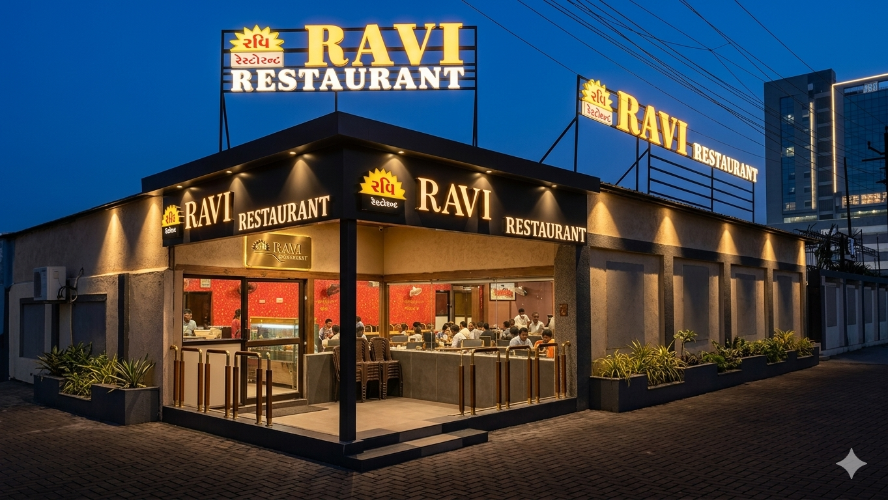
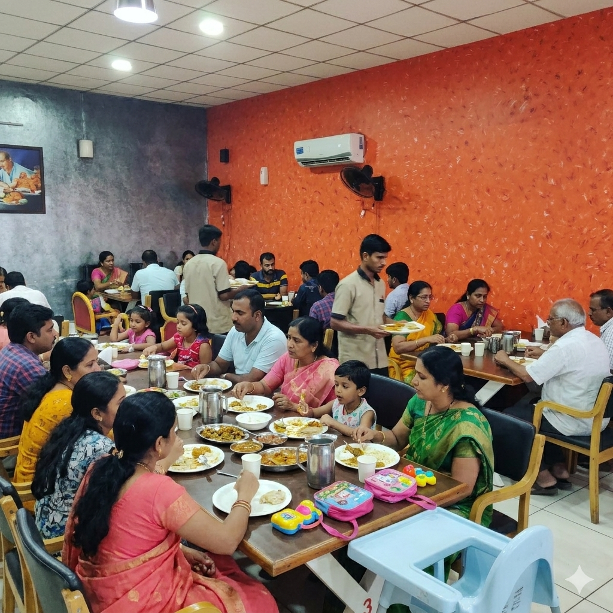
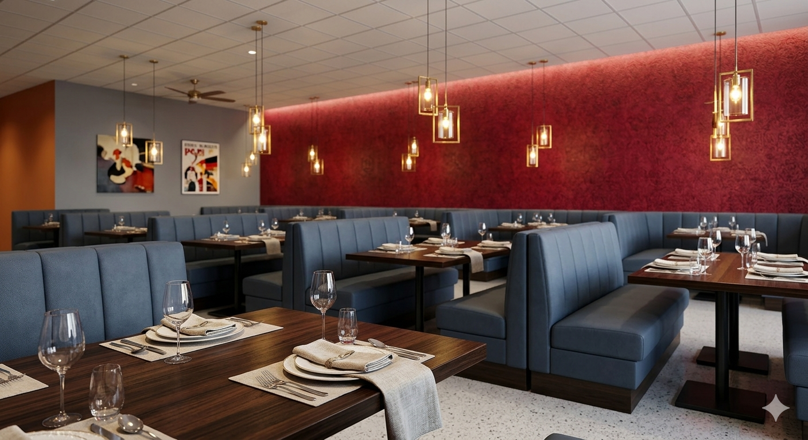

Dish Title Lookup
Dish Subtext Identity
An authentic, community-centric dining space translating decades of regional recipes into vibrant, modern street-style favorites and unlimited traditional thalis.

Step into an environment explicitly designed for shared family experiences. Our dining spaces balance modern structural cleanliness with bold, high-energy textured feature walls, cultivating an atmosphere that transitions seamlessly from bustling lunches to late-night neighborhood conversations.



